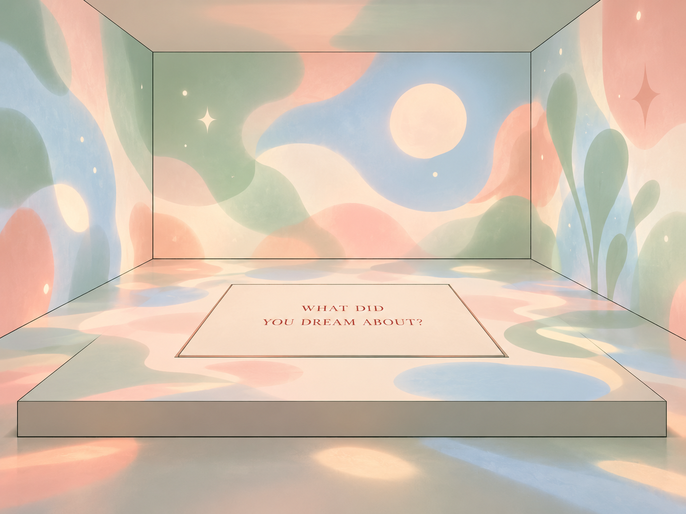
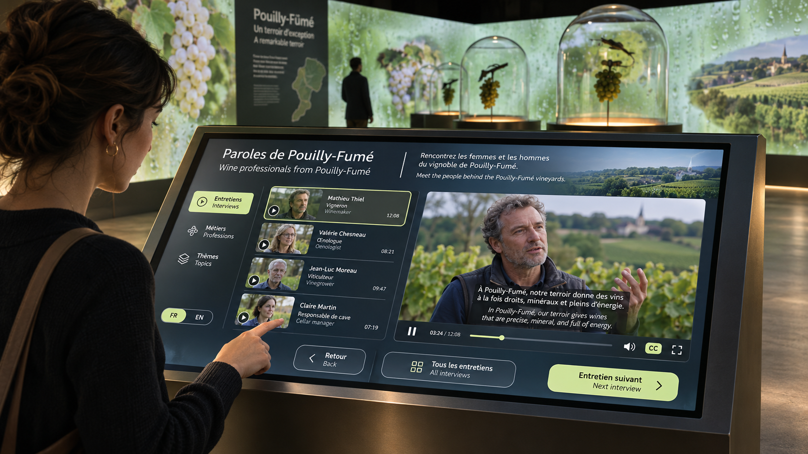
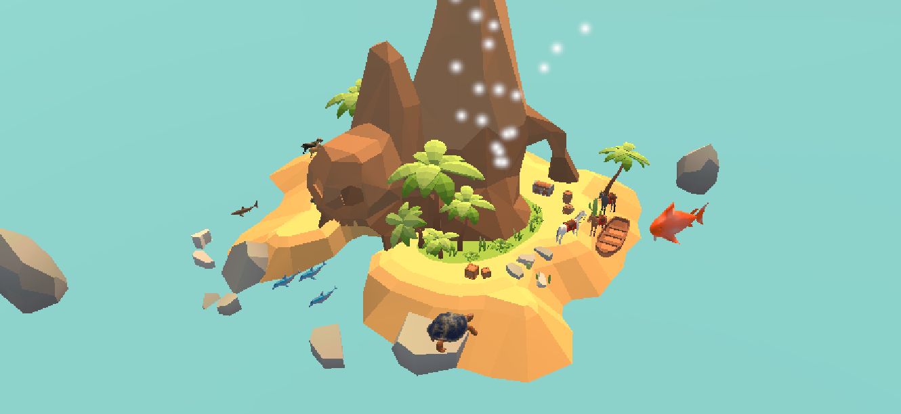

Concevoir des
interfaces sensorielles &
immersives.
Étudiant en 2e année de master d'ingénieur, spécialité Master of
Science à l'ESILV (école d'ingénieurs).
J'explore la convergence entre scénographie physique, moteur temps réel
Unity,
interfaces tactiles et intelligence artificielle générative.
Prototype Unity pour un mur interactif monumental de 2 × 6 mètres
plongeant les visiteurs dans les quatre saisons de la viticulture.
Développement du système physique de bulles interactives en C# et synchronisation temps
réel
en OSC avec MadMapper pour orchestrer les visuels et le son spatialisé.
UnityC#MadMapperOSCInstallation 12m²

Voir les images et la vidéo
02IA Générative & UX • 2024Projet R&D
DreamLog : Journal Onirique Augmenté
Journal intime interactif qui convertit des récits de rêves en visuels métaphoriques
pour enrichir l'introspection personnelle. Analyse des symboles et des émotions par IA
afin de révéler les motifs récurrents au fil du temps.
Generative AIUI / UXStorytellingVideo Demo

Défiler la galerie
03Interface Tactile & Web • 2024Musée Pouilly-Fumé
Borne Interactive pour Interviews
Application tactile bilingue (FR/EN) présentant 9 entretiens avec des vignerons locaux.
Du prototypage sous Figma à l'intégration web en HTML/CSS/JavaScript,
optimisée et déployée sur boîtier matériel BrightSign LS425.
HTML5 / JSFigmaBrightSign LS425Muséographie

Défiler la galerie
04Environnement 3D & HCI • 2024Projet ESILV
Survie Insulaire : Monde Interactif Unity
Expérience d'immersion régie par un cycle jour/nuit dynamique.
Le joueur rescapé sur une île isolée doit entretenir son feu de camp pour repousser
les menaces nocturnes, explorant les mécaniques d'engagement émotionnel et d'ambiance
sonore.
05Design Produit & Éco-conception • 2024Kickstarter
Paste Scraper : Réduction du Gaspillage
Prototypage et design d'un outil éco-conçu en matériaux renouvelables permettant de
vider
intégralement les tubes de dentifrice et contenants semi-rigides.
Préparation d'une campagne de lancement sur Kickstarter.